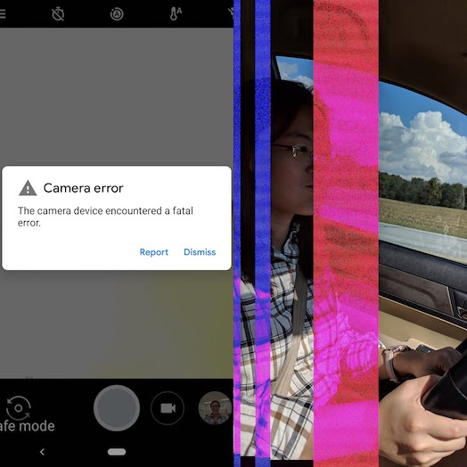
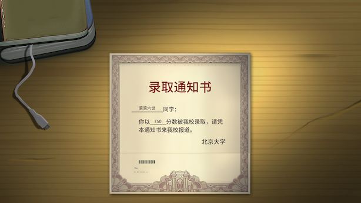
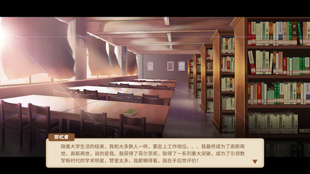

2018年10月。上一期是9月刊。另外一不小心，这个月结系列就已经过了一年了！第一期是17年10月刊，然后这一年间就基本没有什么其他 ad hoc 的主题了😂。
夜话
金庸先生🙏。金庸小说我小时候都看过，现在第一眼想起来的是《天龙八部》——第四十五回 枯井底 污泥处，算是我的一个启蒙了。听说金庸先生后来修改了天龙八部的结局，段誉和王语嫣最终还是没有走在一起，嗯这个确实是更加合理的剧情。
借着去 Madison 划水的机会，我们去了北密看久闻大名的红叶，不过看到的好多都已经是下边这样的黄叶了：
10月我叛逃 iOS 了，从用智能手机的第一天起我用的就是 Android，坚持了亲儿子信仰这么些年，怎么就叛逃了呢？最近几个月，Pixel 2 相机拍照时不时会报错退出，然后甚至还自动添加过下边这样的条纹外饰😓。于是我对 Google 的硬件突然就失去了信心。。
- 
- 绝大多数我在 Android 上已经熟悉的流程在 iOS 上都能找到对应的路径，但长截图app好像没有。通知提醒系统的权限管理确实是 iOS 做得好得多。另外 Siri 是真的傻😓。
在听「选美」的第72集社会学家看「亚裔诉哈佛」（上）时我突然认识到：是呀，在美国这么一个不同质化的社会里，诉诸于收入区分的阶层与诉诸于族裔相比，能够获得的资源与相互支持少太多了！
《天书》这个台我最近在听，他们聊的社科人文类的研究科普我非常喜欢！！比如聊到整个彝族的历史——《XXXVIII 隐遁的彝人》；比如聊到一个古时候的文字是怎么一点一点被破译出来的——《XV：破译线形文字B》！
《中国式家长》这个游戏动人心弦！我们养第一代宝宝，拼死拼活摸爬滚打，最终高考548上了东华。第二代宝宝我们在小学时候第一次拿到了全💯的满分成绩，超开心！以为是个神童能上清华了，结果到了高中之后就掉队了。。最终高考618去了华科。第三代宝宝终于上了北大！第四代宝宝上了国防科技大学当了首富。第五代宝宝又上了北大当了全运会冠军还撩到了妹。第六代宝宝高考满分上了北大最终高斯在世！（诶你们是不是对隔壁清华有意见🙄）
- 
- 